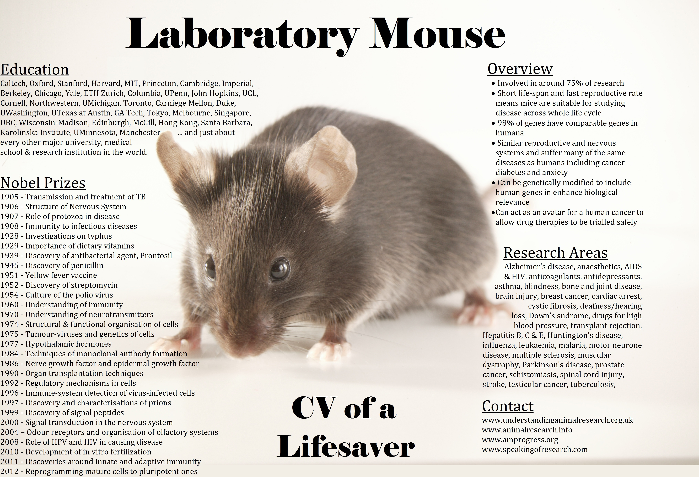

Current Research Challenges
Current Research ChallengesHuman and rodent HSCs differ in several key aspects, which is important for researchers to consider when using animal models to study liver diseases.
For more information, please hover over the figure below

Human HSCs are scarce due to limited liver tissue access and ethical constraints. In vitro, HSCs rapidly activate, which may not accurately represent their natural state. Variability among HSCs from different individuals adds complexity to research results. Replicating the complex liver microenvironment in vitro is another significant challenge.